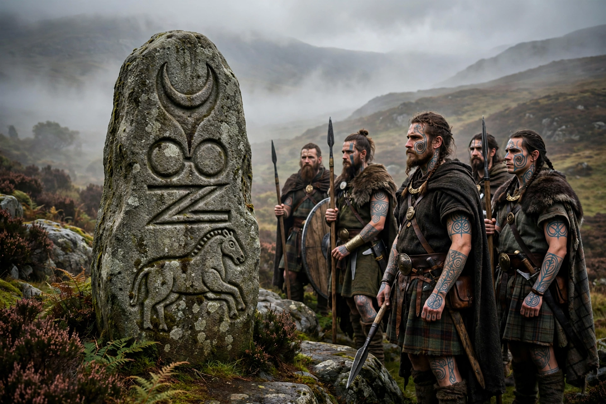

The Picts were a group of peoples who lived in what is now northern and eastern Scotland during late antiquity and the early Middle Ages, roughly from the Roman era until about the 10th century. Roman writers called them Picti, "the painted ones," possibly referring to tattooing or body paint. Their distinctive carved symbol stones and ogham inscriptions are their best-known legacy.

| Region | Northern and eastern Scotland (Pictland) |
|---|---|
| Era | c. 3rd–10th centuries AD |
| Language | Pictish (probably Brittonic Celtic) |
| Known for | Symbol stones, ogham inscriptions, kingdoms of Fortriu and others |
Roman sources first mention the Picti in AD 297. Pictish raiders harassed Roman Britain, and after Rome's withdrawal, Pictish kingdoms such as Fortriu consolidated north of the Forth. The missionary Columba visited the Pictish king Bridei in the 6th century, and the Picts gradually adopted Christianity. In 685, at the Battle of Dun Nechtain (Nechtansmere), the Picts under Bridei III decisively defeated the Northumbrians, checking Anglian expansion northward.
Pressure from Norse settlers and the rise of the Gaelic kingdom of Dál Riata in the west led, in the 9th century, to the union traditionally associated with Kenneth MacAlpin (Cináed mac Ailpín); by about 900 the Pictish identity had merged into the Gaelic kingdom of Alba, the forerunner of Scotland, and the Pictish language disappeared.
Pictish society was organized in kingdoms and provinces, with kingship possibly passing through the female line in some cases, as Bede suggested. The Pictish language is sparsely attested in place names and inscriptions; most scholars now regard it as a Brittonic (P-Celtic) language related to Welsh and Cumbric, though this was long debated. Their symbol system — crescents, discs, beasts, and mirrors carved on standing stones — remains undeciphered but likely conveyed names or identities.
See also: Pictish language · Pictish stones · Kingdom of Alba · Fortriu